✈️ Перелеты
🏨 Базовые локации по маршруту
У подножия священной скалы, 5 мин пешком до входа через Южные ворота.
Венецианская гавань, белые переулки, водные такси на пляж Колимбитрес.
Золотой песок, спокойное бирюзовое море, 10 мин на автобусе до столицы Хоры.
🚢 Морские переходы (Скоростные катамараны Seajets)
💡 Золотые правила путешествия
📅 10-дневный календарь (Нажмите день для перехода к гиду)
Прибытие в Афины & Заселение в Кукаки
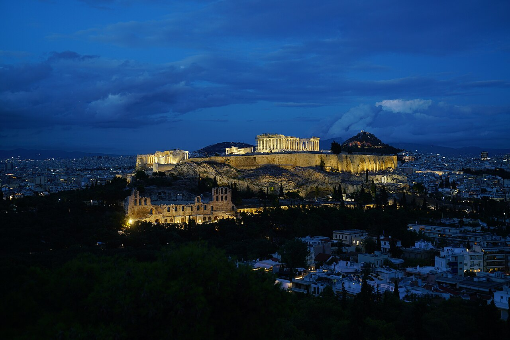
Ночная панорама подсвеченного Акрополя над крышами Кукаки с холма ФилопаппуПрилет в аэропорт Элефтериос Венизелос (ATH). Поездка на такси до района Кукаки занимает около 35 минут по скоростному хайвею.
Заселение в Кукаки, отдых после перелета. Ночью над крышами домов уже виден золотистый силуэт подсвеченного Парфенона.
Утро в Кукаки: Фреддо эспрессо и спанакопита
Перед восхождением обязательно загляните в местную пекарню (легендарная Takis Bakery на улице Misaraliotou). Закажите Фреддо Эспрессо (эспрессо со льдом, взбитый в шелковую пену) и хрустящую теплую спанакопиту из слоеного теста фило со свежим шпинатом и сыром фета.
Южный вход & Театр Диониса
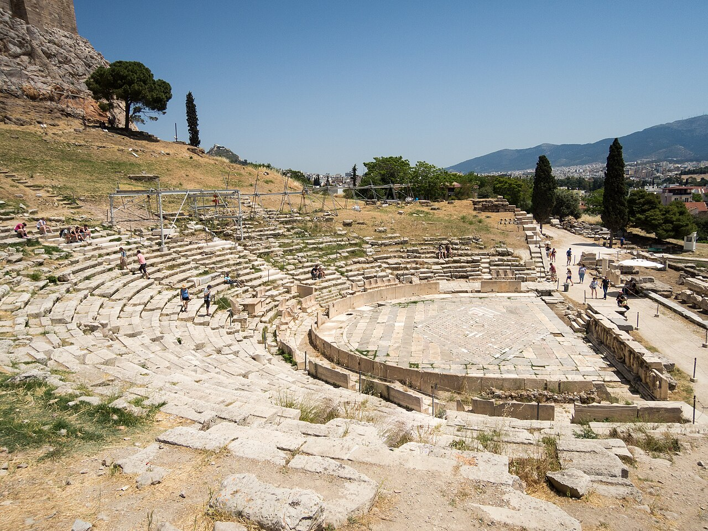
Мраморные кресла жрецов и орхестра Театра Диониса на южном склонеЛайфхак №1: Приходите именно к Южным воротам (Dionysiou Areopagitou, напротив станции метро Akropoli). Вход открывается ровно в 08:00. Здесь нет туристических автобусов, и вы первыми поднимаетесь мимо Театра Диониса на 17 000 зрителей, где впервые ставились трагедии Эсхила и Софокла.
Одеон Герода Аттика (Иродион)
Продолжая подъем, вы увидите колоссальные арки римского одеона II века нашей эры. Сенатор Ирод Аттик построил его из белого мрамора в память о своей жене Регилле. Театр имел крышу из ливанского кедра без единой внутренней колонны!
Пропилеи и Храм Ники Аптерос
Парадные мраморные врата архитектора Мнесикла. Справа на бастионе парит жемчужина — храм Бескрылой Ники. Афиняне лишили богиню победы крыльев, чтобы удача никогда не смогла покинуть город.
Парфенон: Секрет оптических иллюзий
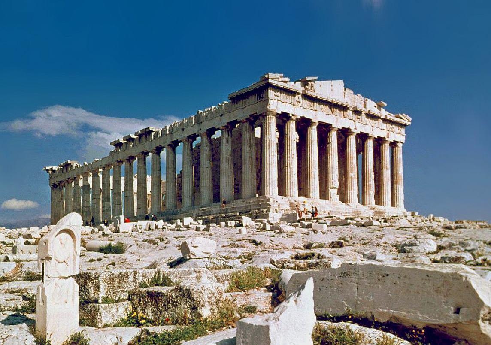
Парфенон в лучах утреннего солнца: кривизна стилобата и энтазис колоннГлавный шедевр античности. Здесь нет ни одной прямой линии: стилобат приподнят на 11 см, колонны имеют утолщение (энтазис) и наклонены внутрь. Если продолжить их оси в небо, на высоте 2400 метров они сойдутся в вершине воображаемой пирамиды!
Эрехтейон и тайна Кариатид
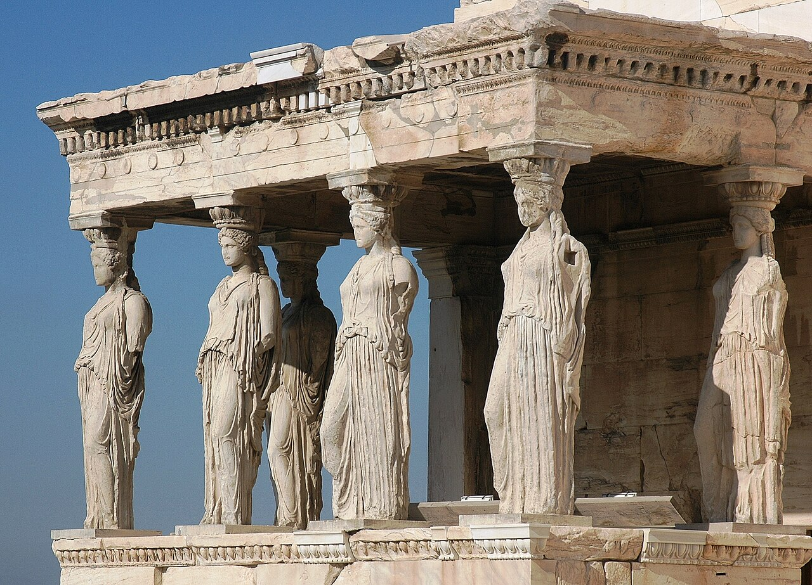
Портик дев (Кариатиды Эрехтейона): шедевры античной биомеханикиСамое священное место Акрополя: здесь спорили Афина и Посейдон. Обратите внимание на священную оливу во дворе и знаменитый Портик Кариатид: толстые косы дев на затылке были гениальным расчетом инженеров для укрепления хрупких мраморных шей под весом перекрытия.
Скала Ареопаг: Холм Марса
Выйдя через Пропилеи, поднимитесь по металлическим ступенькам на гладкую мраморную скалу Ареопаг. Отсюда открывается лучший ракурс на фасад Пропилей и бескрайнюю панораму Афин с древней Агорой внизу.
Анафиотика: Тайный остров под Акрополем
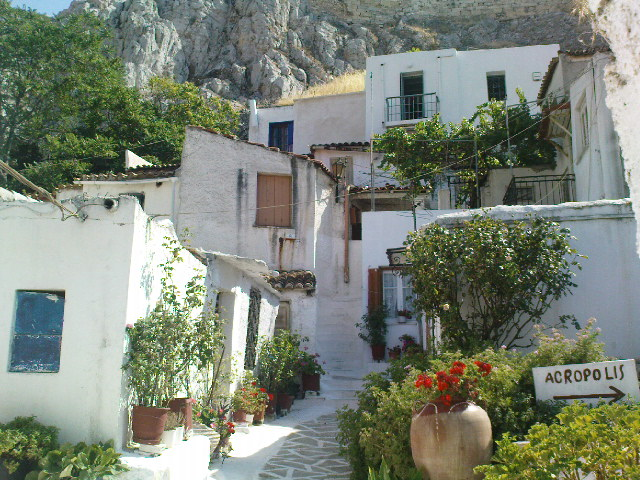
Белоснежный кикладский лабиринт Анафиотики прямо под отвесными стенами АкрополяСпуститесь по тропе к северо-восточной стене скалы. В 1841 году каменщики с острова Анафи воспользовались законом: если дом построен между закатом и восходом, его нельзя сносить! За считанные ночи вырос аутентичный островной поселок.
Древняя Агора и Храм Гефеста
Храм Гефеста — самый идеально сохранившийся античный храм классической Греции: его крыша и колоннады стоят нетронутыми уже 2500 лет. Здесь спорил Сократ и зарождались суды присяжных.
Офис Google Athens (Маруси)
Адрес: Fragkokklisias 6, Marousi 151 25. Расположен прямо у шоссе Attiki Odos. Поездка на такси от центра занимает 20 минут.
Чек-ин по бейджу, экскурсия для Валерии по гостевому пропуску, обед в Google Cafe, фотографии и кофе с видом на северные Афины.
Закат на холме Филопаппу
В 300 метрах напротив Парфенона возвышается холм Филопаппу. На закате (19:37) заходящее солнце озаряет западный фасад храма расплавленным золотом. Здесь нет толп Ликавитоса — только тишина, сосны и величие.
Афинская ночь: Руфтопы и миксология
Вечерний ужин на руфтопе Couleur Locale с видом на подсвеченный Акрополь, затем авторские коктейли в The Clumsies или Baba Au Rum (регулярно в топ-50 лучших баров мира).
Выход в море: Паром Seajets в открытую синеву
Такси из Кукаки в порт Пирей (ворота E7/E9) в 06:15 утра. Катамаран Seajets рассекает глубокие синие воды Эгеиды, устремляясь к архипелагу Киклады.
Прибытие в Парикию & Храм Стовратной
Прибытие в порт Парикия. В 5 минутах от причала стоит один из древнейших византийских храмов Греции — Панагия Экатонтапилиани (Храм Стовратной), основанный матерью императора Константина святой Еленой в IV веке.
Науса: Венецианский форт и рыба гуна
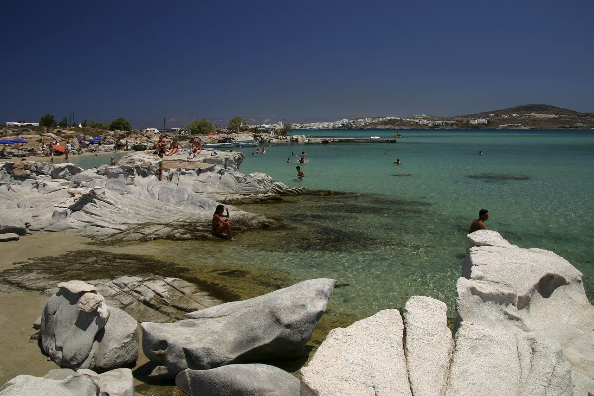
Венецианская гавань Наусы: рыбацкие лодки, таверны у воды и соленый бризНауса — самый открыточный рыбацкий городок Киклад. Чек-ин в бутик-отеле, прогулка по лабиринтам белых переулков и ужин у самой кромки воды с традиционной вяленой скумбрией гуна.
Колимбитрес: Лунные гранитные ванны
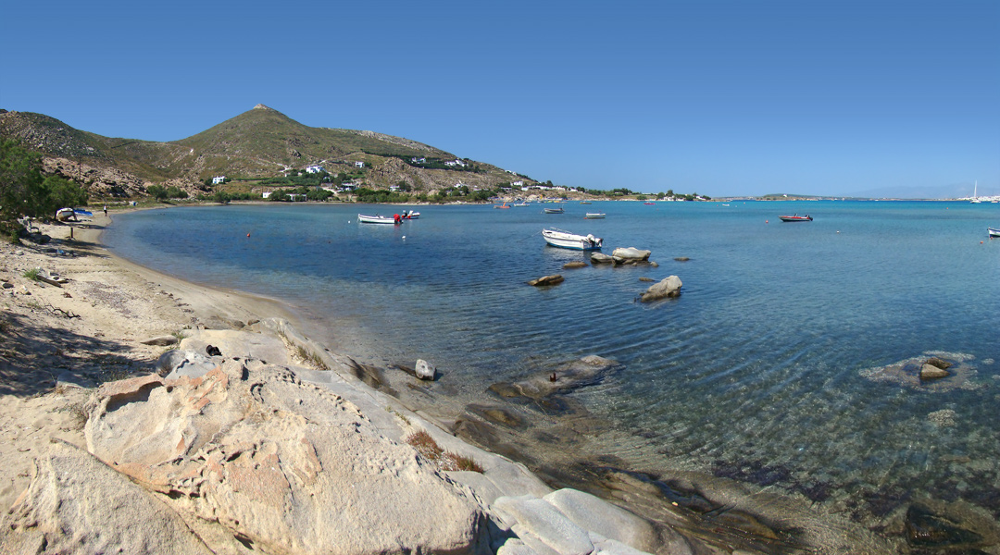
Природные гранитные монолиты и лазурная бухта пляжа КолимбитресВодное такси из Наусы доставляет вас к пляжу Колимбитрес. Миллионы лет морские волны обтачивали гранитные монолиты, создав фантастические гладкие чаши с теплой прозрачной водой.
Лефкес & Византийская тропа
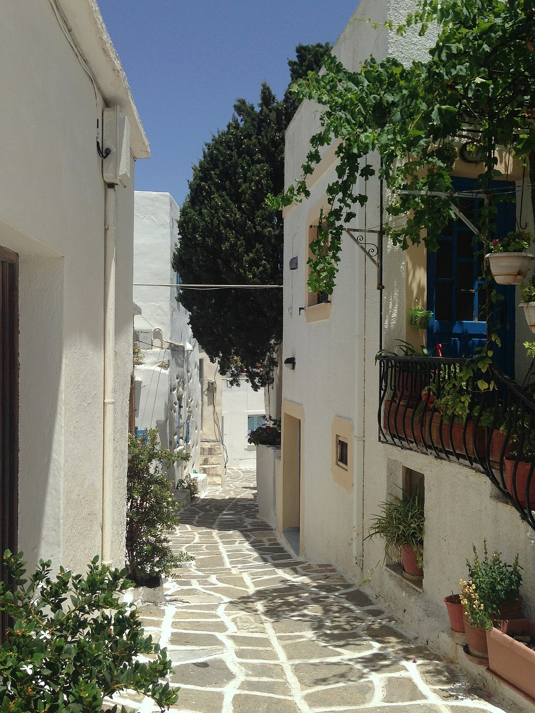
Горная столица Лефкес на Паросе в окружении сосен и оливковых рощБеломраморная средневековая деревня в горах, куда жители укрывались от пиратских набегов. От площади ведет 1000-летняя мощеная Византийская тропа среди олив и дикого тимьяна.
Переход на Наксос & База в Агиос Прокопиос
Короткий 35-минутный переход на скоростном пароме. Заселение в отель на золотом пляже Агиос Прокопиос на все 5 последующих ночей.
Портара: Врата Аполлона на закате
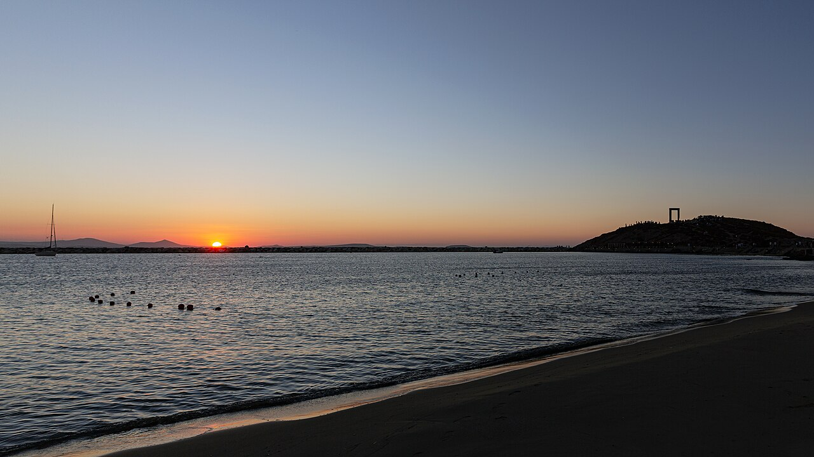
Врата Портара (VI в. до н.э.) на скалистом островке Палатия в лучах заката20-тонные мраморные монолитные врата храма Аполлона. Именно здесь Тесей оставил спящую Ариадну, которую затем нашел и взял в жены бог виноделия Дионис.
Лазурные воды Агиос Прокопиос
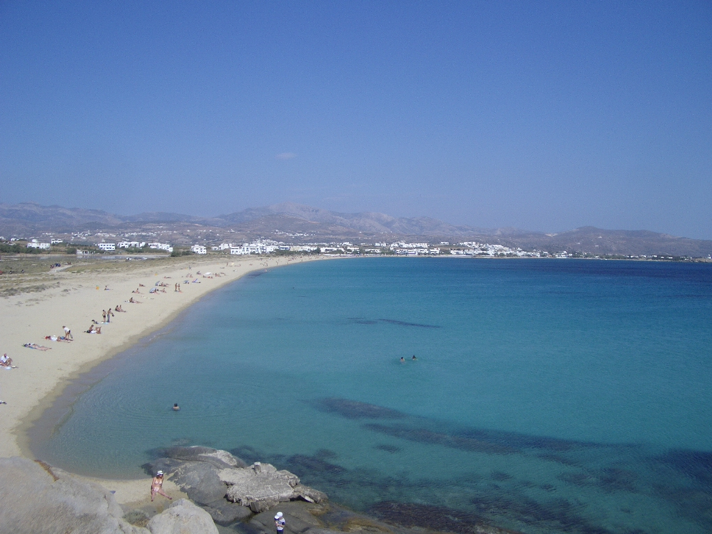
Широкий золотой песчаный пляж и кристальные бирюзовые воды Агиос ПрокопиосОтдых на одном из лучших песчаных пляжей Средиземноморья. Хвойный бриз, лазурные переливы воды и свежая рыба в прибрежных тавернах.
Венецианский Кастро & Старый рынок Хоры
Цитадель венецианского герцога Марко Санудо 1207 года. Башни с гербами знати, католический кафедральный собор и арочные проходы Старого рынка.
Вход в Кальдеру Санторини & Порт Афиниос
Паром входит в затопленную 400-метровую кальдеру вулкана. Отвесные черные и красные лавовые скалы уходят прямо в морскую бездну. Подъем на минивэне по серпантину на вершину обрыва.
Имеровигли: Панорамный хайк над бездной до Фиры
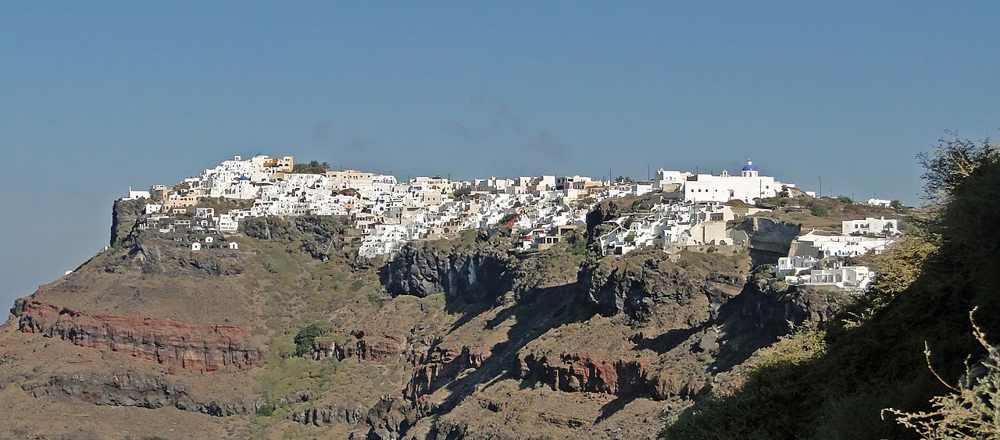
Вид с балкона Имеровигли на скалу Скарос и вулканическую кальдеру«Балкон Эгейского моря» — наивысшая точка кальдеры. Панорамная пешеходная тропа вдоль кромки обрыва со скалой Скарос и видами на спящий вулкан Неа-Камени.
Ия: Синие купола и дома-пещеры ипоскафа
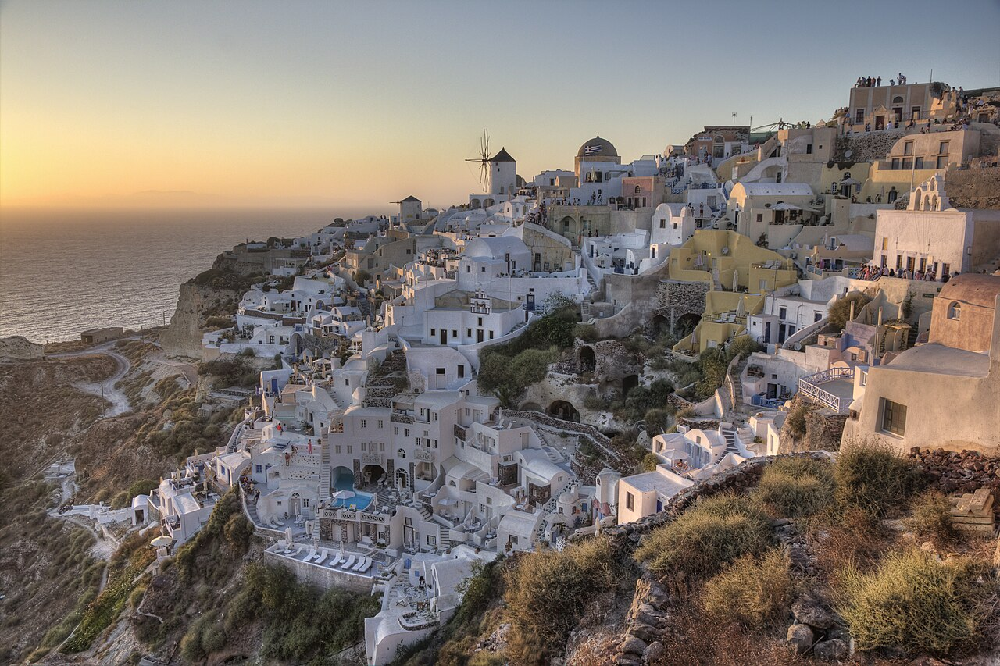
Панорама Ии: ветряные мельницы, белые дома и золотой закат над кальдерой СанториниОткрыточные ракурсы Санторини. Знаменитые дома ипоскафа, выдолбленные прямо в вулканическом туфе, обеспечивающие естественный микроклимат.
Халки: Ликер Китрон с 1896 года
Древняя столица острова в оливковой долине Трагея. Визит на семейную дистиллерию Валлиндрас, где в медных перегонных кубах XIX века настаивают цитроновый ликер Китрон.
Апейрантос: Поэзия чистого мрамора
Уникальная горная деревня критских переселенцев: мраморные мостовые, резные арки и традиция рифмованных поэтических диалогов (коцикия).
Вкусы Эгеиды: Ассиртико, Гравиера и море
Длинные песчаные дюны пляжа Плака. Безмятежное купание, наксосский картофель, острый сыр Арсенико и молодое островное белое вино под шум вечернего прибоя.
Прощание с Кикладами & Возвращение домой
16:00 — Скоростной паром Наксос ➔ Афины (Пирей, прибытие в 19:30). Переезд на метро Line 3 или такси в аэропорт ATH. Вылет вечерним рейсом обратно в Варшаву.